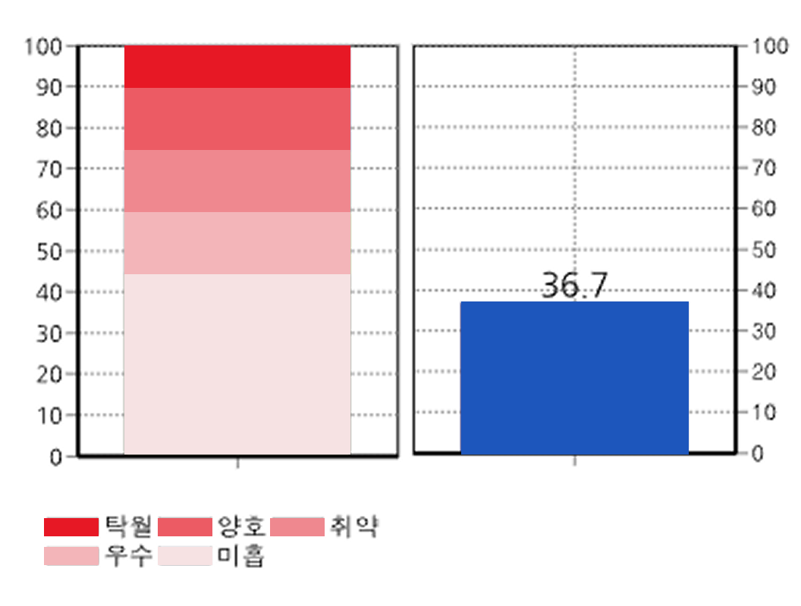
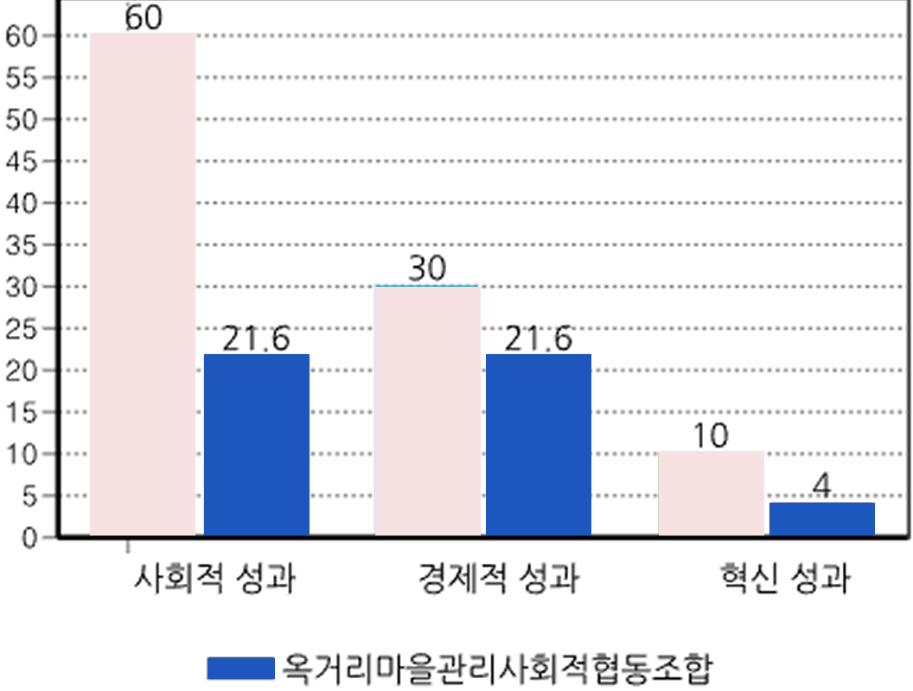
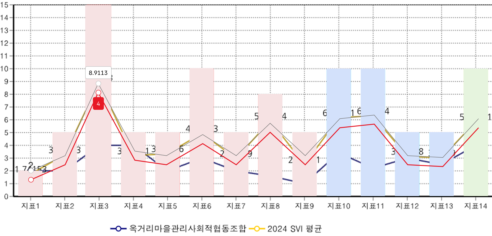

3. 종합평가
귀사의 2025년 사회적가치지표(SVI) 측정결과는 취약 입니다.
대부분 사업영역에서 사회적가치 실현을 위한 시스템을 갖추지 못하고 활동이 미비하여 개선을 위한 변화 시도가 필요한 수준입니다.
대부분 사업영역에서 사회적가치 실현을 위한 시스템을 갖추지 못하고 활동이 미비하여 개선을 위한 변화 시도가 필요한 수준입니다.
SVI위치

성과별 점수

지표별 비교
